Dexterous multi-fingered hands are in growing demand for humanoid, service and robot-learning research, yet commercial hands such as the Allegro and Shadow hands rely on dedicated actuators or tendon transmissions and cost from tens of millions to over a hundred million won, while recent 3D-printed tendon-driven hands such as RUKA and ORCA still cost millions of won and inherit the assembly and tensioning burden of tendon drives. We present Handling Hand, a modular 16-DoF robotic hand of human-hand size (about 20 cm tall) built only from commercial MG90S hobby servos and 3D-printed PLA+ parts. Each servo is taken out of its housing, and its motor, gear train, potentiometer and control board are rearranged inside a finger-shaped frame, so the actuators sit directly in the fingers while keeping the servo's own position control. In the index-to-little fingers, the DIP joint is coupled to the PIP joint by a rigid link whose nonlinear angle relation we derive from the link geometry; an elastic-cord passive fingertip compensates for the fixed coupling, and the thumb gets an independently actuated DIP joint. The four fingers use one identical module design, and each detaches from the palm on its own, so repairs can be made at the finger or servo level. A MuJoCo grasp simulation checked the design before the final hand was built, and the hand is driven by an ESP32 and a PCA9685 servo driver. The prototype performs enveloping and fingertip grasps on objects of different sizes and, mounted on a collaborative arm, multi-step tasks such as unscrewing a light bulb and wiping a whiteboard, at a parts cost of 87,340 KRW: less than 1% of the price of commercial multi-DoF hands.
In most demonstrations the hand is mounted on a 6-axis collaborative robot arm. Clips are muted and sped up where marked; uncut videos are at the bottom of the page.
The hand closes around a lit bulb, and the lamp goes dark as the twist breaks the contact. It unscrews the bulb with repeated grasp–twist–release cycles; when the bulb comes free it drops onto the table, and the hand reaches behind the socket to pick it back up.
Twisting a lit bulb until the lamp goes dark
Fingertip grasp, wrist turn, release, repeat
Recovery: the freed bulb fell behind the socket; the hand pinches it and lifts it
Take 2 in full, about two minutes: the lamp goes dark, regrasp cycles, the bulb comes free and drops, then it is picked up
A long-horizon task with a soft object: an enveloping grasp of a plush toy, pushing a bin lid open while still holding it, a quick release into the bin, and pushing the lid shut with the fingertips.
Grasp the plush, press the spring lid open, drop it in
The plush deforms in the grasp; the fingertips push the lid open
Release into the bin, then close the lid with the fingertips
A thumb–finger pinch pulls a single tissue out of a dispenser and lays it on a whiteboard; the hand then picks up an eraser and scrubs the marker off through the tissue.
Pinching a tissue from a pop-up box and draping it on the board
Thumb-versus-fingers grasp of a whiteboard eraser
Re-grasp and wipe: the tissue drags across the board
With the other fingers held straight, one finger and the thumb reach the table on either side of a marker lying flat, center it and pinch it. On lift-off the marker pivots 90° between the fingertip caps and stays pinched as the hand lifts it off the table.
Approach and pinch a marker lying flat on the table
Nudging and centering the marker between the fingertips
The marker pivots 90° in the pinch, then is lifted off the table
A stock MG90S micro servo is a DC motor, a multi-stage reduction gear train, a potentiometer and a control board inside a boxy housing that does not fit a human-sized finger. We discard the housing and relocate the motor and gears along the length of the finger, keeping the original gear meshing and reduction, in a 3D-printed frame sized to the finger's width and thickness. The frame doubles as the phalanx and supports the actuator, each joint is actuated in place without tendons, and the unit is still commanded with a target angle like an unmodified servo.
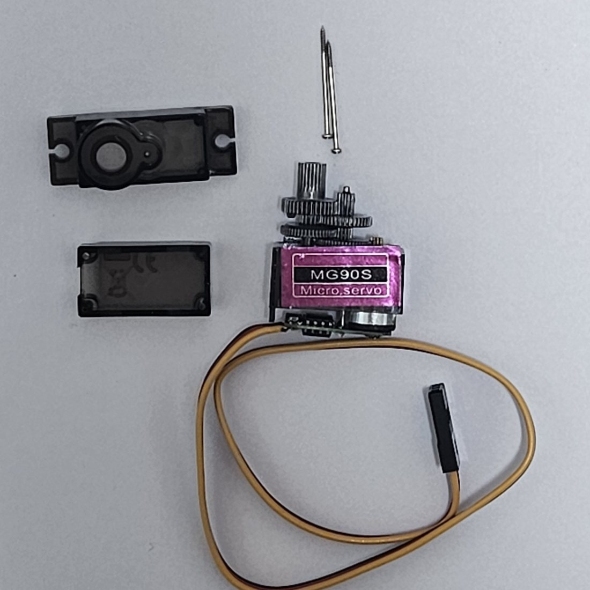
(a) Stock MG90S, disassembled
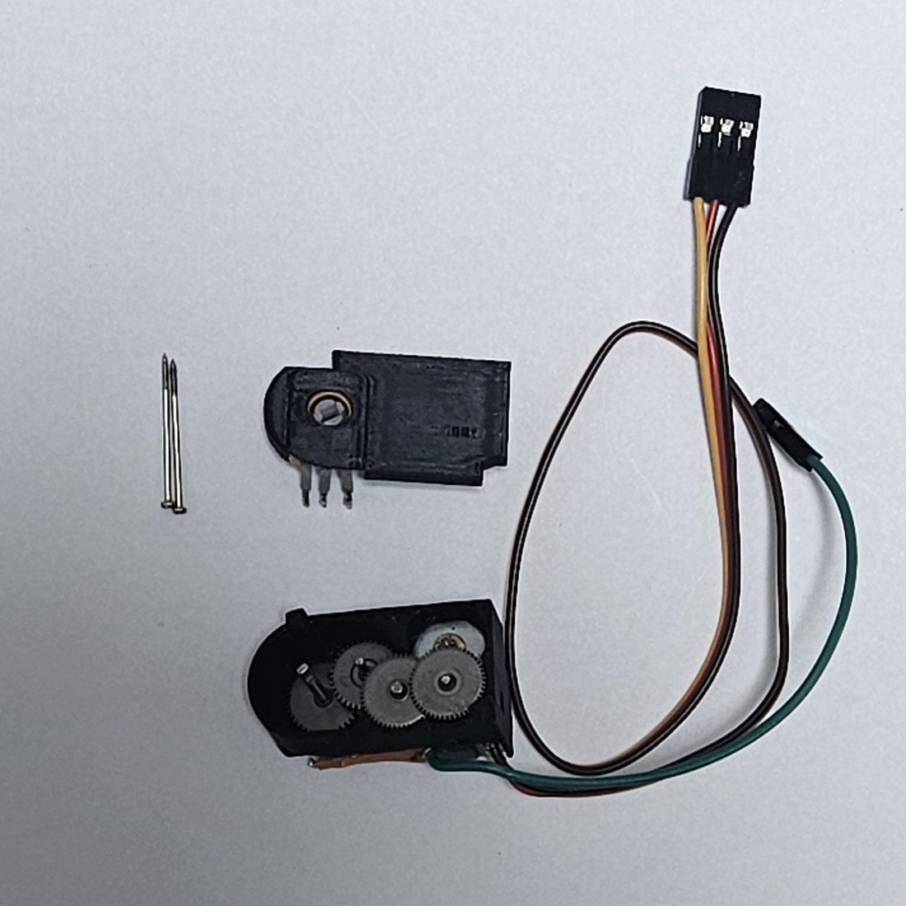
(b) Rearranged into a finger-shaped frame
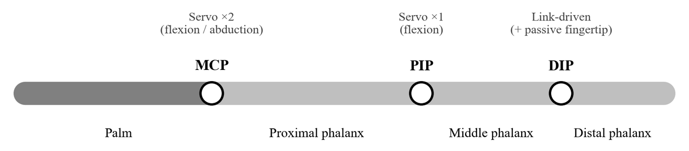
Joints of one finger and how each is driven
| Stock servo as-is | Tendon drive | Rearranged servo (ours) | |
|---|---|---|---|
| Cost | Low | Medium | Low |
| Control difficulty | Low | High | Low |
| Space efficiency | Low | High | High |
| Fabrication difficulty | Low | High | Medium |
| Maintainability | High | Medium | High |
| Actuator inside the finger | Hard | Not needed | Possible |
Each index-to-little finger has three servo units: MCP abduction, MCP flexion and PIP flexion. The DIP joint has no motor; it follows the PIP through a rigid link.
The DIP joint follows the PIP through a rigid link placed so that both joints agree at 0° and 90°. In between, the relation is deliberately nonlinear: early in flexion the DIP lags by up to about 2.5°, so the fingertip approaches the object fairly straight, and in mid-range it leads by up to about 6°, so the finger curls around the object. Drag across the plot or use the slider.
φ(θ) from the team's computed table of the link geometry (data).
Because the linked DIP cannot adapt on its own, small objects touched near the tip could get poor contact. The fingertip is tied to the top of the DIP segment with an elastic cord: it holds its default pose, folds back under contact force, and springs back when released, with no extra actuator. The thumb instead gets its own DIP servo (4 DoF), which made the thumb grasp less awkward than in the first design.
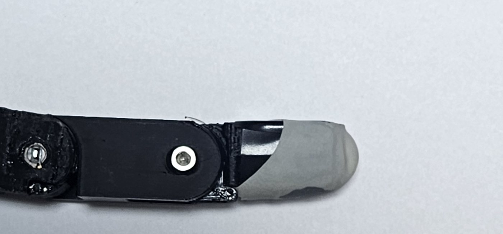
(a) No external force
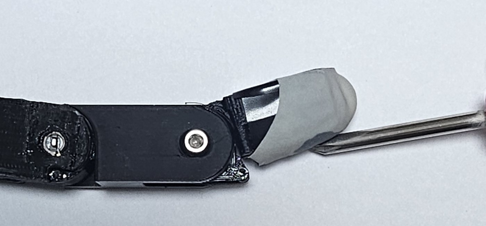
(b) The fingertip folds back under contact force
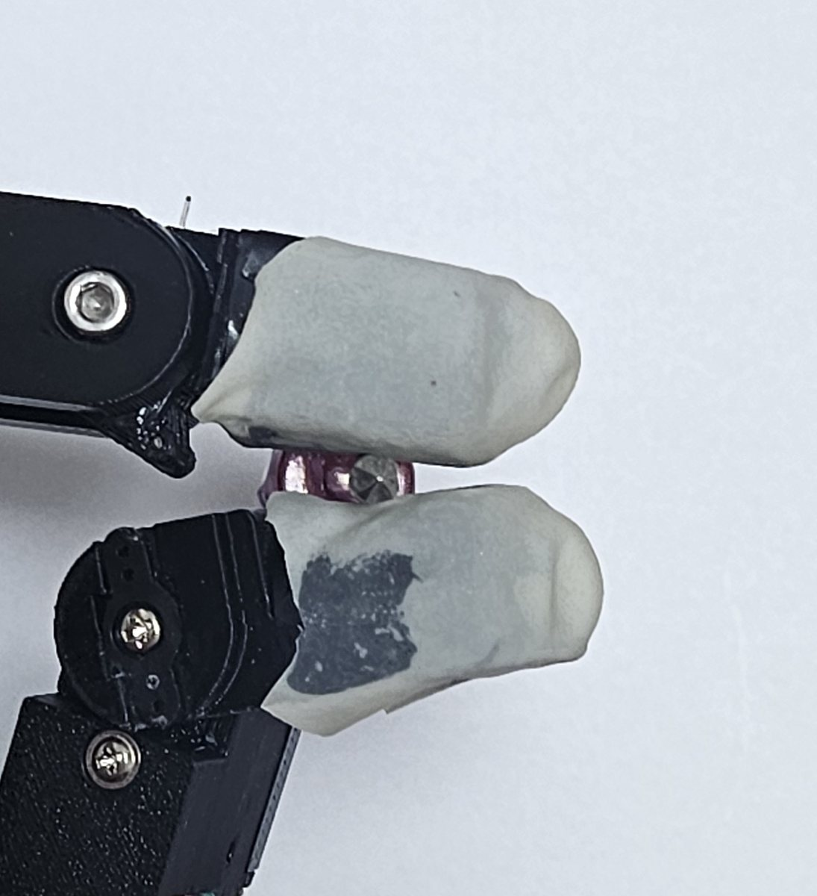
(c) Fingertip grasp of a thin object
The four fingers are identical modules (3 DoF plus the linked DIP) that detach individually from the palm and can swap positions; the thumb reuses the same lower (MCP) structure and differs only in its distal part. A damaged servo can be replaced inside its module without rebuilding the finger. The video shows the 3D model.
| Digit | Actuated joints | DoF |
|---|---|---|
| Thumb | MCP flexion, MCP abduction, PIP, DIP | 4 |
| Index | MCP flexion, MCP abduction, PIP (+ linked DIP) | 3 |
| Middle | MCP flexion, MCP abduction, PIP (+ linked DIP) | 3 |
| Ring | MCP flexion, MCP abduction, PIP (+ linked DIP) | 3 |
| Little | MCP flexion, MCP abduction, PIP (+ linked DIP) | 3 |
| Total | 16 servos + 4 passive linked DIP joints | 16 |
PIP flexes 0–90° and the linked DIP follows over 0–90°. The MCP flexion and abduction ranges have not been measured yet.
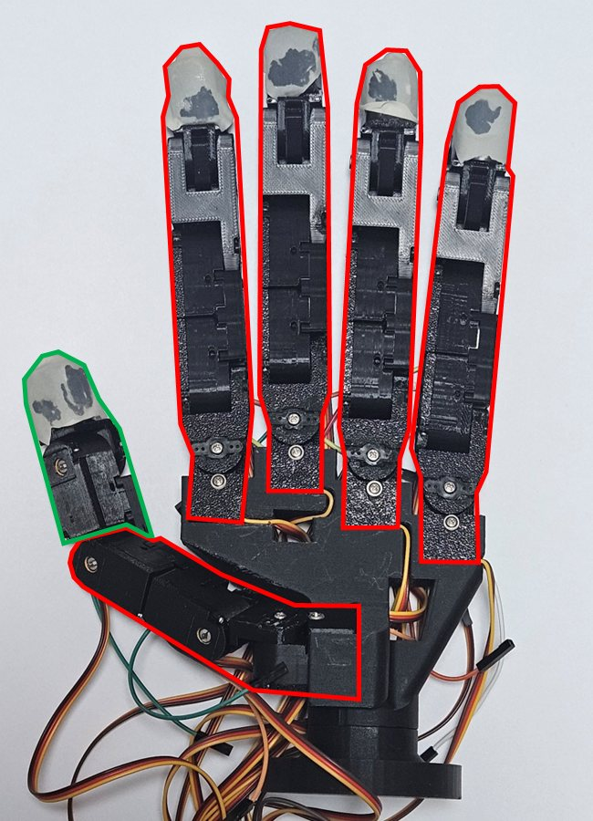
■ common structure, ■ thumb-specific DIP part
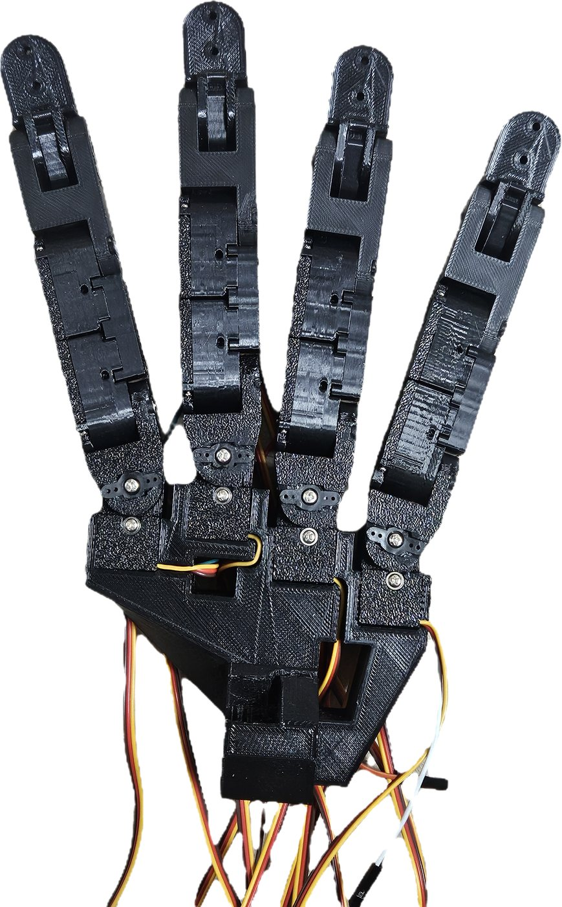
Four identical modules mounted, thumb detached
A PC sends joint targets over USB serial to an ESP32, which drives a PCA9685 16-channel PWM board over I²C, one channel per actuated joint. Each rebuilt servo closes its own position loop with its original potentiometer, so no external joint sensors are needed. Servo power comes from a separate 5 V supply wired to the PCA9685 V+ terminal, so current spikes do not disturb the logic.
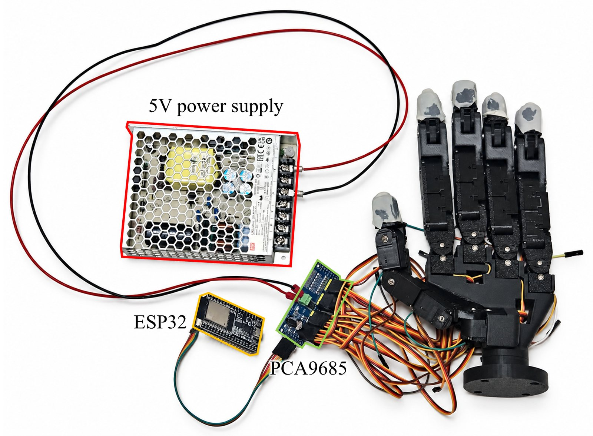
The complete system: 5 V supply, ESP32, PCA9685 and the hand
Each grasp follows three steps: MCP abduction sets the finger spacing and the thumb moves into opposition; MCP and PIP flex, and the linked DIP curls each finger around the object; on contact the passive fingertips comply while the thumb DIP presses from the opposite side. Spreading the fingers lets the hand wrap a large object, medium objects are grasped without spreading, and thin objects are held at the fingertips.
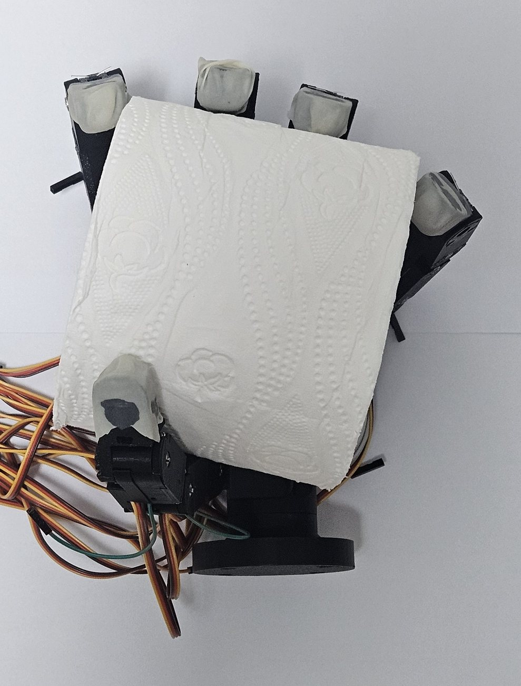
(a) Large object, fingers spread by MCP abduction
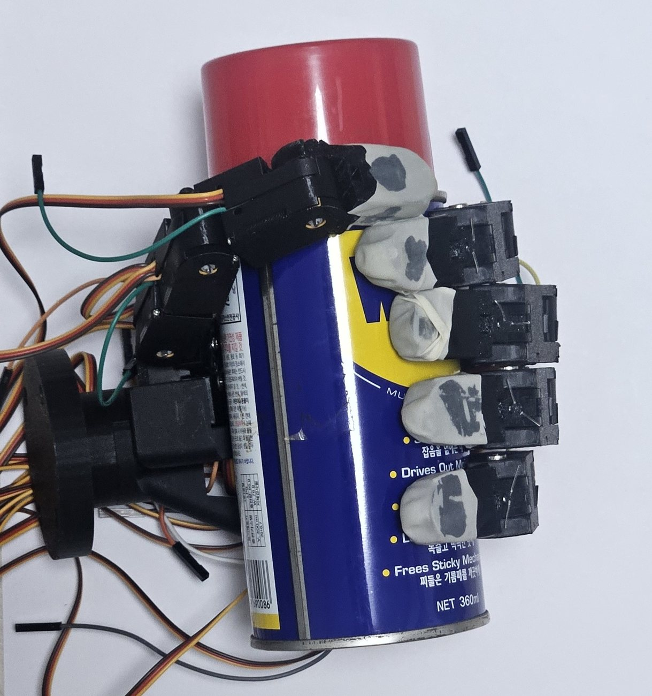
(b) Medium object, no spreading
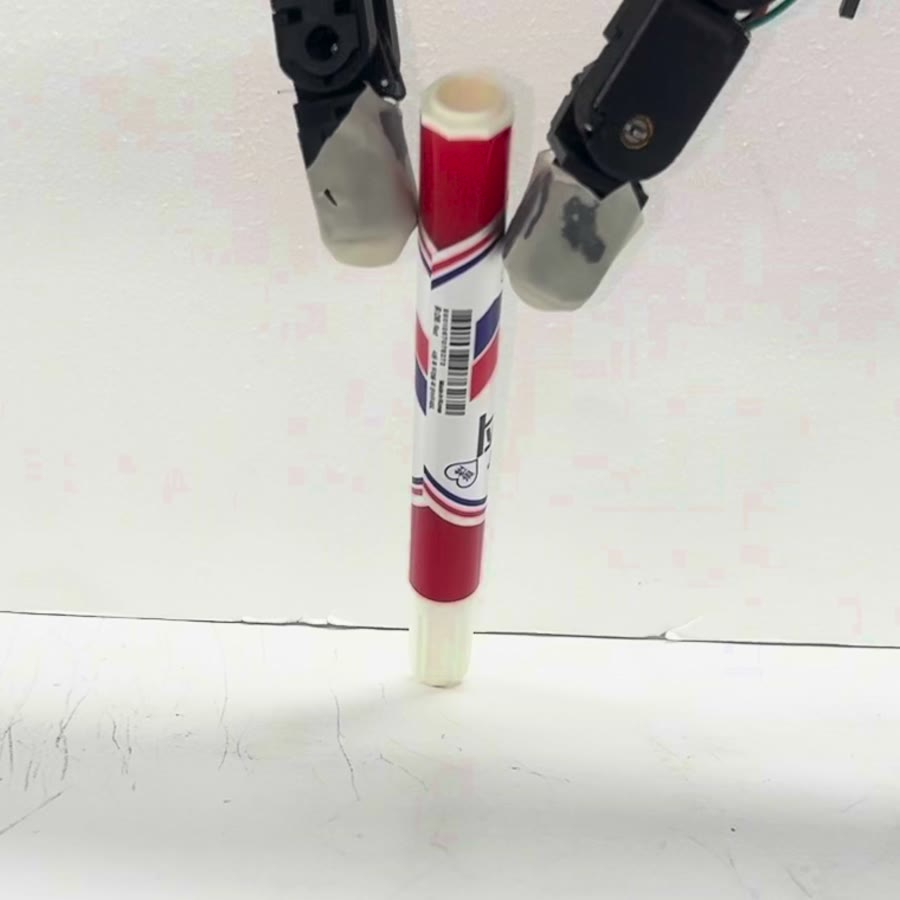
(c) Thin object (a marker) held at the fingertips
The Inventor assembly was exported to URDF and MJCF and tested in MuJoCo before the final hand was built. Closing the hand quasi-statically around a YCB mustard bottle, the four fingers wrap one side, the thumb opposes and the palm supports the bottle. The forces below are simulated contact forces, not measured grip force.
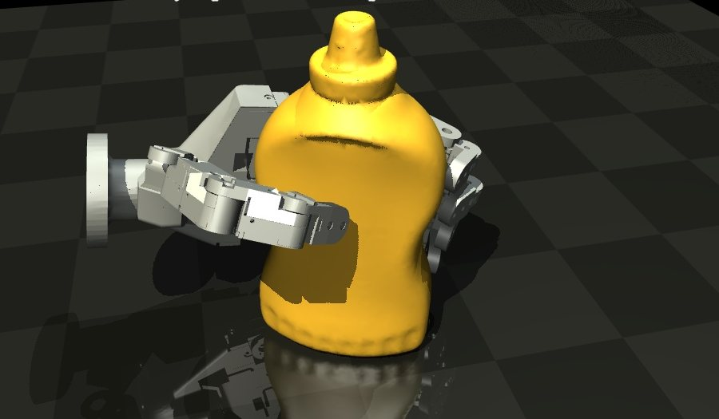
MuJoCo grasp of the YCB mustard bottle
Each point settled for 1 s in simulation; peak total 32.7 N. The run used the earlier simulation model, in which the finger DIP joints were commanded separately rather than through the linkage. One failed step (close = 0.36, where the fingers did not close) is not plotted. Hover or tap for values. Data (CSV)
The whole hand costs 87,340 KRW in parts, with the 16 servos about 38% of it. Because every actuator is an off-the-shelf hobby servo, a broken joint is fixed by swapping a servo that costs a few thousand won. See the full parts list.
| Item | Qty | Cost (KRW) |
|---|---|---|
| MG90S metal-gear micro servo | 16 | 33,440 |
| eSUN PLA+ filament, 1 kg | 1 | 19,800 |
| 5 V 18 A SMPS | 1 | 16,800 |
| ESP32 dev board | 1 | 7,000 |
| Wiring and consumables | 1 | 5,000 |
| PCA9685 16-ch PWM driver | 1 | 3,300 |
| M3 bolts and nuts | 1 | 2,000 |
| Total | 87,340 |
| Hand | Actuation | DoF | Price | Repair |
|---|---|---|---|---|
| Shadow Hand | Forearm motors + tendons | 20 act. / 24 joints | ≥ 100M KRW (US$100k+) | Manufacturer service |
| Allegro Hand | Dedicated DC motors in the fingers | 16 (4 fingers) | ≈ 20M KRW (US$15k+) | Manufacturer service |
| RUKA / ORCA | 3D-printed, tendon-driven | 15–17 | ≈ 2–4M KRW (build) | User-built, open source |
| LEAP Hand | Off-the-shelf Dynamixel servos | 16 (4 fingers) | < US$2,000 | User-built, off-the-shelf servos |
| Handling Hand | Rearranged geared hobby servos, mounted at the actuated joints inside the fingers | 16 (5 fingers) | 87,340 KRW (parts) | Swap a finger module or a single servo |
Prices are approximate. Allegro, Shadow and RUKA/ORCA are from the KSME report (Tables 1 and 6), our hand from the itemised parts list (Table 5; Table 6 of the report PDF misprints it as about 130,000 KRW), and LEAP from leaphand.com.
Qualitative scores defined by the team from public specifications and each design's actuation method; hover or tap an axis for values.
| Ours | Allegro | Shadow | RUKA / ORCA | |
|---|---|---|---|---|
| Low cost | 5 | 1.5 | 1 | 3 |
| Module replaceability | 4.5 | 3.5 | 2 | 3 |
| User maintainability | 4.5 | 2.5 | 1.5 | 2.5 |
| Human-hand size | 4 | 3 | 4 | 4 |
| Number of DoF | 4 | 4 | 5 | 4 |
| Ease of control | 4 | 4 | 3 | 3 |
In the mid-term report (July 2026) the thumb used the same linked DIP as the other fingers. Simulation and prototype tests showed that this limited the thumb-tip posture, so the final hand gives the thumb its own DIP servo. Passive elastic fingertips were also added to improve fingertip contact on small objects.
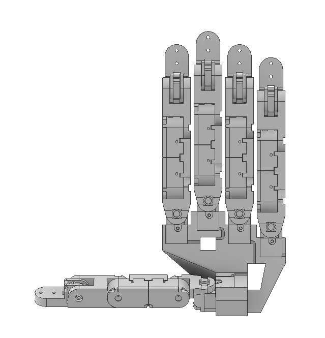
Mid-term CAD (Jul 2026)
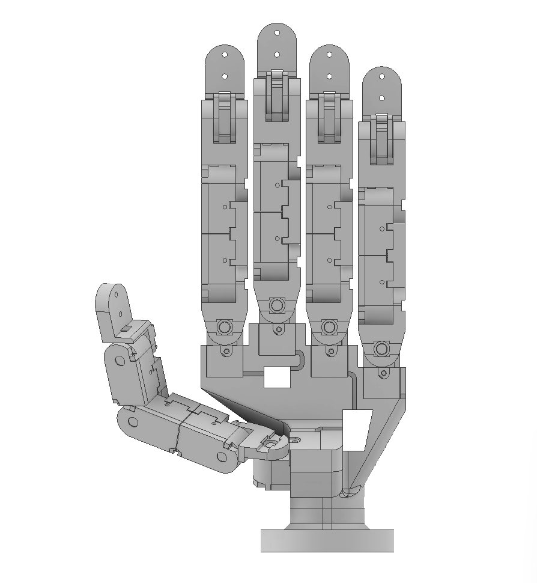
Final CAD
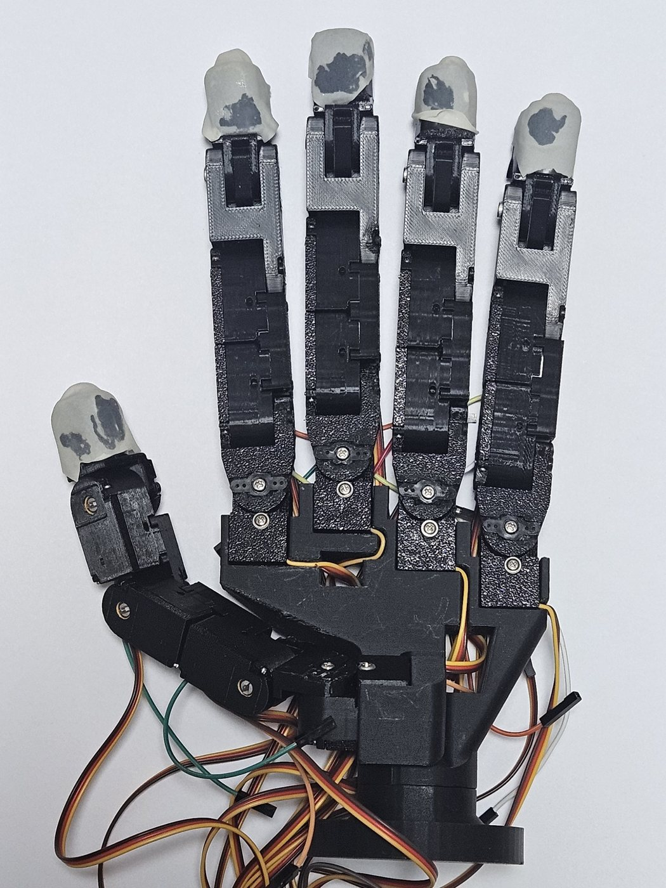
Final hand, front
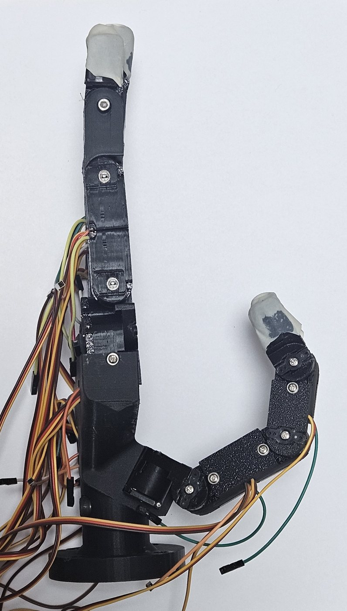
Final hand, side
| Problem | Cause | Fix | Result |
|---|---|---|---|
| No room for a servo inside the finger | The stock servo housing does not fit the finger shape | Rearrange the motor, gears and electronics to the finger shape and print a dedicated frame | The drive sits inside the finger |
| Driving the DIP | Avoid an extra servo for the DIP | Compute the link pivot positions and length from the PIP and DIP geometry before and after rotation | The DIP follows the PIP with no extra actuator |
| Joint play and print error | Additive manufacturing gives dimensional error and friction | Clearance-aware dimensions, post-processing and correction during assembly | Joints move without binding |
| Wear at joints and link connections | Thin sections at load paths, links and screw bosses | Thicker and reinforced load paths | No breakage in repeated motion |
| Poor fingertip contact on small objects | The linked DIP cannot set the fingertip posture on its own | Elastic passive fingertip on top of the DIP | The fingertip adapts to the object with no extra actuator |
| Awkward thumb grasps | Too few DoF at the thumb DIP | A separate servo for the thumb DIP | Independent thumb-tip posture |
From Table 4 of the report. The durability result is qualitative; no cycle count was recorded.
Every demonstration at real-time speed, without cuts (720p, muted).
Unscrewing a light bulb, take 2 (2:25)
Unscrewing a light bulb, take 1 (1:27)
Tissue and eraser (1:41)
Pick and drop into a bin (0:32)
Pick, drop and close the lid (0:51)
Fingertip pinch of a marker (0:20)
@techreport{park2026handlinghand,
title = {Low-Cost Modular Multi-{DOF} Robotic Hand},
author = {Park, Jeonghwan and Yoon, Taehwan and Um, Seunghwan and Choi, Hyouk Ryeol},
institution = {Sungkyunkwan University},
type = {Final design report},
note = {16th KSME National Student Design Competition},
year = {2026}
}This project was carried out by team Handling (핸들링), School of Mechanical Engineering, Sungkyunkwan University, for the 16th KSME National Student Design Competition (2026). We thank Prof. Hyouk Ryeol Choi for his guidance throughout the project.